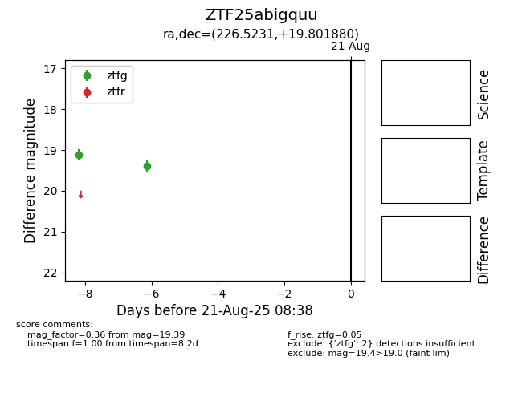

Target ZTF25abigquu at 2025-08-21 08:38, see:
FINK: fink-portal.org/ZTF25abigquu
Lasair: lasair-ztf.lsst.ac.uk/objects/ZTF25abigquu
ALeRCE: alerce.online/object/ZTF25abigquu
alt names
ZTF25abigquu (ztf,alerce)
coordinates:
equatorial (ra, dec) = (226.5231,+19.80188)
galactic (l, b) = (26.8493,+58.36594)
photometry
last ztfg=19.39
2 ztfg detections
